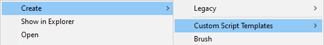
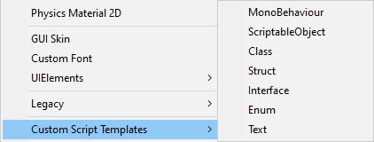

After importing the package, you will have an additional MenuItem "Custom Script Templates" under the "Create" menu.
(Right click into the "Project" window.)
The position of the "Custom Script Templates" menu item might be different from the one on the right, depending on the Unity version.

This MenuItem holds all Templates.
You can customize the default ones, delete items you don't want, or create your own Templates.
